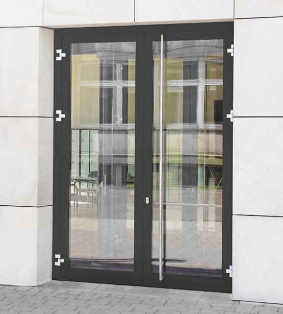

Türen und Fenster individuell und nach Maß bei unschlagbarem Preis- Leistungsverhältnis.
ALU & PVC
Hochwertige Fenster und Türen aus Aluminium und PVC:

- Individuelle Maße, Varianten und Oberflächen
- Lieferzeiten ab 5 Werktagen frei Einsatzort
- Herstellergarantie je nach Material 2-5 Jahre
- Kunden in 18 Ländern Europas
- Fertigung und Lieferung von ca. 70.000 Elementen pro Jahr
- 150 Mitarbeiter
- Rahmenprofile von GEALAN, bei Nürnberg
- Beschläge von WINKHAUS, Münster
- Glas u.a. von Saint-Gobain, Aachen
HOLZ
Wir bieten als Vertriebsrepräsentanz Deutschland und Österreich hochwertige Fenster aus Holz nach Maß:
- Classicline: Fenster und Balkontüren aus Kiefernholz oder Meranti, dreischichtverleimt mit einer hervorragenden Wärmedämmung. Farblackierung nach Wahl.
- Decorline: Fenster und Balkontüren, innen und/oder außen mit Profil, Zierleisten ohne Beeinträchtigung Funktion und der Wärmedämmung. Diese Linie ist auf historische Altbauten und Denkmalschutzanforderungen spezialisiert. Wir haben eine Vielzahl von Zierprofilen bereits vorrätig.
- Thermoline: Brettschichtholz in 4 Lagen mit hervorragenden Dämmeigenschaften (Ug 0,8 = Ug 0,5W/qmK) mit Doppeldichtung im Flügel und warmer Kante. Diese Ausführung ist besonders für Passivhäuser geeignet.